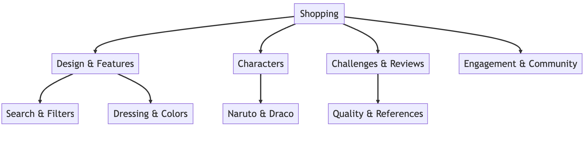
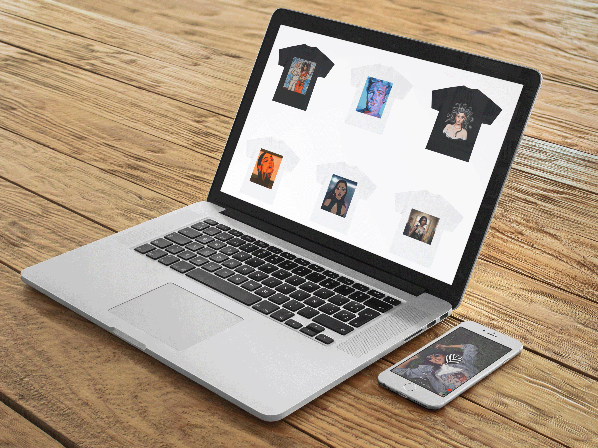
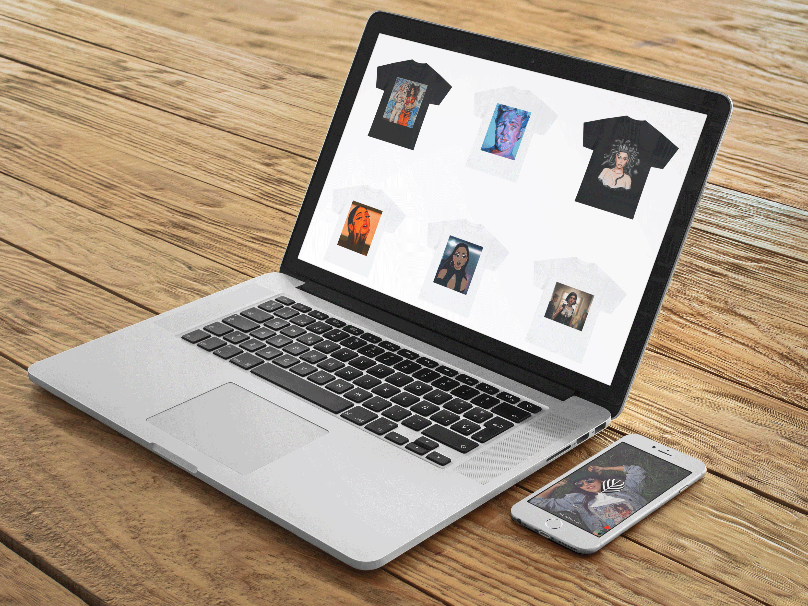

• Problem Statement
I wanted to streamline the shopping experience for pop culture enthusiasts We understand that finding the right blend of pop culture references in stylish clothing can be daunting. Furthermore, this challenge is intensified by the diverse tastes in characters, series, and design preferences that vary among individuals.
We at Trustorry are committed to revolutionizing the way fans of pop culture shop for their fashion. We acknowledge the hurdles in finding apparel that resonates with one's favorite characters, series, or themes, all while maintaining a chic style. We offer a comprehensive platform that caters to all your geek fashion needs. Our aim is to make shopping for pop culture attire as straightforward as possible.
• Solution
We embarked on a 7-week intensive design journey, leveraging the design thinking methodology, encompassing five pivotal stages: empathize, define, ideate, prototype, and test, The culmination of this process was the development of a fully interactive platform with a geek chic style quiz.
Our final offering is a comprehensive shopping experience that includes anime-inspired apparel, comic-themed outfits, and pop culture designs. With Trustorry, we transform the traditionally daunting task of finding the perfect pop culture attire into a delightful and effortless endeavor.
• Main Features
Exclusives Promotions
Original Music Experience
Themed Collections
Product Views
• My Role
I spearheaded comprehensive user research, administering both surveys and in-depth interviews to gather valuable insights. Drawing from this data, I took the lead in designing the product, undergoing multiple iterations to refine and optimize the user experience before its final launch.
We used a design-thinking methodology of 5 phases to solve this problem
1.Empathize
• User Interviews
• User Surveys
2. Define
• Affinity Map
• User Personas
3. Ideate
• Brainstorming
• User Flows
4. Prototype
• Wireframing
• Visual Design
5. Test
• Usability testing
• Quantitative usability
SURVEY
I interviewed 10 individuals to delve into their online shopping habits, specifically focusing on their experiences with various stores. The discussions shed light on their preferences, likes, and dislikes, providing a comprehensive understanding of what truly resonates with online shoppers.
Their feedback provided a valuable perspective on the prevailing likes and dislikes in the e-commerce landscape.
USER INTERVIEWS
We interviewed a variety of Roosevelt Island locals in-depth to fully understand their experiences and needs. These 45-minute meetings gave us insightful feedback that helped us enhance our platform.
STYLE: MODERATED
NUMBER: 5 PEOPLE
DURATION: 45 MINUTES
INTERVIEW TYPE: INTERVIEW
Main questions I asked
• If you could design the ideal online
shopping experience for geek chic
clothing, what would it 100k like?
What unique features would it have?
• What specific challenges have you
faced when searching for high-quality
geek chic attire online?
• When shopping for pop culture
apparel, what types of product
reviews or customer feedback are
most useful to you?
• If you were to recommend our
clothing line to a friend, how would
you describe it in one sentence?
• What are some fun, unique ways
you'd like to see our brand engage
with customers online?
Preparation
In order to stay organized and take track of all sessions, I used Notion
• It'S Often a challenge to find the
perfect geek chic attire online,
especially with varied preferences
and the vast array of options
available. This website aims to
simplify that process, catering to
diverse tastes and ensuring a
seam less shopping
• Typically, participants visit the
website either to casually browse
culture attire or to specifically
enhance their personal style and
express their fandom passions.
• Most Of the respondents discover their pop culture attire through social media platforms like Instagram and TikTOk. highlighting the influence Of online trends on their shopping choices.
Our research delivered quite the revelation. We initially believed that users were primarily drawn to pop culture attire based on popular characters or franchises. However, we were mistaken. The paramount factor for our users is the overall design and theme of the attire.
AFFINITY DIAGRAM
To organize research findings, I used an affinity mapping technique. I put down each insight on one sticky note, found patterns, and grouped them together.
USER PERSONA
For each user group that I've discovered, I developed a persona. See the example of one representative of the group

COMPETITOR ANALYSES
To evaluate the market and get more accurate ideas at the ideation stage of the design-thinking process, we conducted a competitor analysis

BRAINSTORM SESSION
We came up with a platform design after brainstorming that had distinct, simple-to- navigate tabs and pages for movie-themed games, snacks, and drinks. All party planning components have a concentrated, user-friendly interface thanks to this architecture.
USER FLOW
Once we had a clear idea of our users and their needs, we were able to ideate on a final user flows
 

We created low-fi wireframes, followed by hi-fi with Figma, so we can test out our idea
To see how people interact with wireframes and whether the product idea meets their expectations, I conducted several iterations Of usability testing.
STYLE:
MODERATED
Main Tasks we asked to complete
1. Browse and Select Products: Participants were asked to navigate the website, explore various collections (e.g., anime, comic, pop culture), and select items they would be interested in purchasing.
2. Provide Feedback on the Shopping After interacting with the website, participants were asked to share their thoughts on the overall design, ease of use, and any challenges they encountered, especially concerning product discovery and the checkout process.
3. Search for Specific Items: Users were prompted to use the website's search functionality to find specific products or themes, testing the efficiency and accuracy Of the search feature.
The following changes are a few of the things that we applied based on the testing feedback
Users encountered challenges pinpointing the accurate character depictions on each apparel itern.

Users express challenges in identifying apparel that accurately represents their favorite characters and voice concerns over the authenticity of the designs when planning their culture-themed outfits.
The remedy involved enhancing the prominence Of characters in the designs and refining the clarity, ensuring each character's identity is unmistakably recognizable and true to its origin.
.png)
• Outcome
We've effectively developed a responsive website that addresses the primary challenge Of selecting authentic pop culture attire'. We've received a plethora Of positive feedback about the concept and the websites design. Furthermore, we've enhanced the product authenticity. However, the true resonance of the character representations on the apparel with our users remains to be fully gauged. It would be beneficial to revisit the project down the line and further evaluate this aspect,
• Takeaway
We've observed that it's beneficial to maintain a consistent design approach throughout the development of our pop culture website. Users often became engrossed in the aesthetics and character representations, Which sometimes overshadowed their feedback on the core functionality and user experience of the site.
Previous Case Study
 1.png)